Путь «Демонесса»
От слабой к сильной: Seq 9 «Убийца» → Seq 1 «Демонесса Апокалипсиса». Сменить путь можно на «Красный Жрец» — с Seq 5 и сильнее, зельем на ступень выше (как).
| Seq | Последовательность | Ступень сервера |
|---|---|---|
| 9 | Убийца | II |
| 8 | Подстрекатель | III |
| 7 | Ведьма | IV |
| 6 | Демонесса Наслаждения | V |
| 5 | Демонесса Страданий | VI |
| 4 | Демонесса Отчаяния | VII |
| 3 | Демонесса Нестарения | VIII |
| 2 | Демонесса Катастроф | — |
| 1 | Демонесса Апокалипсиса | — |
У каждой последовательности: зелье и его ингредиенты (главный — первым), способности, которые она открывает, и отыгрыш — действия, которые переваривают зелье. Ингредиенты указаны с двумя самыми доступными источниками; все — по ссылке. Ингредиенты Seq 9–6 этого пути бывают и в товарах у жителя Торговец Потусторонних — у каждого по 2 случайных предложения на уровень (цены).
Seq 9 · Убийца
Зелье Убийца Зелье, формула  Убийца Рецепт зелья (Последовательность 9). Эта Seq нужна для ступени II.
Убийца Рецепт зелья (Последовательность 9). Эта Seq нужна для ступени II.
Ингредиенты
- Чёрное перо чудовищной птицы — добыча: Фантом — 5 % за убийство игроком; существо мода: Безголовая невеста (водится: Мир духов) — 21 % за убийство. Все источники (3)
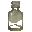
Очищенная вода — крафт: печь; сундук: Постройки Мира духов — 39 %. Все источники (3)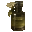
Сок дурмана — пустая бутылка: Сирень — 50 % за попытку, бутылка остывает 1 с. Все источники (2)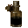
Сок чёрного дурмана — пустая бутылка: Визерская роза — 60 % за попытку, бутылка остывает 1 с; сундук: Постройки Мира духов — 41 %. Все источники (3)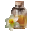
Сок нарцисса — пустая бутылка: Оранжевый тюльпан — 50 % за попытку, бутылка остывает 1 с; существо мода: Безголовая невеста (водится: Мир духов) — 0,49 % за убийство. Все источники (3)
Способности
- Медитация — Медитировать, восполняя духовность
- Теневое сокрытие — Скрыться в тенях от чужих глаз
- Могучий удар — Поразить цель одним мощным ударом
- Физическое усиление (пассивная)
- Плавное падение (пассивная)
Отыгрыш — переваривание за действие и перерыв между засчитанными:
- Убить исподтишка — 0,95 %, раз в 2 с
- Убить во тьме — 0,95 %, раз в 2 с
- Убить моба, не нацеленного на вас — 0,47 %, раз в 5 с
- Убить из лука — 0,76 %, раз в 5 с
- Выпить зелье невидимости — 0,57 %, раз в 5 с
- Красться — 0,095 %, раз в 10 с
- Бросить жемчуг Края — 0,38 %, раз в 5 с
Seq 8 · Подстрекатель
Зелье 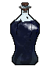 Подстрекатель Рецепт зелья (Последовательность 8). Эта Seq нужна для ступени III.
Подстрекатель Рецепт зелья (Последовательность 8). Эта Seq нужна для ступени III.
Ингредиенты
- Кровь демонической рыбы Бездны — существо мода: Мурлок (водится: океаны) — 21 % за убийство. Все источники (2)
- Очищенная вода — крафт: печь; сундук: Постройки Мира духов — 39 %. Все источники (3)
- Сок дурмана — пустая бутылка: Сирень — 50 % за попытку, бутылка остывает 1 с. Все источники (2)
- Сок чёрного дурмана — пустая бутылка: Визерская роза — 60 % за попытку, бутылка остывает 1 с; сундук: Постройки Мира духов — 41 %. Все источники (3)
- Сок нарцисса — пустая бутылка: Оранжевый тюльпан — 50 % за попытку, бутылка остывает 1 с; существо мода: Безголовая невеста (водится: Мир духов) — 0,49 % за убийство. Все источники (3)
Способности
- Подстрекательство — Натравить двух мобов друг на друга
Отыгрыш — переваривание за действие и перерыв между засчитанными:
- Атаковать более сильного моба — 0,84 %, раз в 5 с
- Убить, будучи в меньшинстве — 0,84 %, раз в 5 с
- Применить «Подстрекательство» — 1,7 %, раз в 15 с
- Позвонить в колокол — 0,42 %, раз в 10 с
- Поговорить с жителем — 0,34 %, раз в 10 с
- Получить урон, будучи в меньшинстве — 0,42 %, раз в 10 с
Seq 7 · Ведьма
Зелье 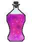 Ведьма Рецепт зелья (Последовательность 7). Эта Seq нужна для ступени IV.
Ведьма Рецепт зелья (Последовательность 7). Эта Seq нужна для ступени IV.
Ингредиенты
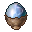
Яйцо агатового павлина — крафт: верстак; существо мода: Безголовая невеста (водится: Мир духов) — 13 % за убийство. Все источники (3)- Очищенная вода — крафт: печь; сундук: Постройки Мира духов — 39 %. Все источники (3)
- Сок дурмана — пустая бутылка: Сирень — 50 % за попытку, бутылка остывает 1 с. Все источники (2)
- Сок чёрного дурмана — пустая бутылка: Визерская роза — 60 % за попытку, бутылка остывает 1 с; сундук: Постройки Мира духов — 41 %. Все источники (3)
- Сок нарцисса — пустая бутылка: Оранжевый тюльпан — 50 % за попытку, бутылка остывает 1 с; существо мода: Безголовая невеста (водится: Мир духов) — 0,49 % за убийство. Все источники (3)
Способности
- Гадание
- Духовное зрение
- Чёрное пламя — Сотворить чёрное пламя, сжигающее цель; оно мощное и трудно гасится
- Власть над морозом — Управлять льдом для атаки: стрелять льдом, сгущать его в копьё или замораживать всю область вокруг
- Невидимость — Стать невидимым
- Зеркальная подмена — Создать зеркала: при получении урона одно разбивается, перенося вас прочь и поглощая урон
- Проклятие — Проклясть цель на смерть; для этого держите кровь цели во второй руке
- Кровопотеря (пассивная) — Поражённые вами цели могут терять кровь. Её можно использовать для проклятий или ритуалов.
Отыгрыш — переваривание за действие и перерыв между засчитанными:
- Убить горящего моба — 0,74 %, раз в 5 с
- Бросить взрывное зелье — 0,74 %, раз в 5 с
- Сварить зелье — 0,74 %, раз в 15 с
- Использовать варочную стойку — 0,59 %, раз в 10 с
- Использовать котёл — 0,44 %, раз в 10 с
- Использовать стол зачаровывания — 0,37 %, раз в 10 с
- Выпить зелье отравления — 0,44 %, раз в 10 с
Seq 6 · Демонесса Наслаждения
Зелье 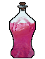 Демонесса Наслаждения Рецепт зелья (Последовательность 6). Эта Seq нужна для ступени V.
Демонесса Наслаждения Рецепт зелья (Последовательность 6). Эта Seq нужна для ступени V.
Ингредиенты
- Глаза суккуба — крафт: верстак; существо мода: Безголовая невеста (водится: Мир духов) — 10 % за убийство. Все источники (3)
- Очищенная вода — крафт: печь; сундук: Постройки Мира духов — 39 %. Все источники (3)
- Сок чёрного дурмана — пустая бутылка: Визерская роза — 60 % за попытку, бутылка остывает 1 с; сундук: Постройки Мира духов — 41 %. Все источники (3)
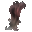
Целые остатки волос суккуба — крафт: верстак; существо мода: Безголовая невеста (водится: Мир духов) — 7,2 % за убийство. Все источники (3)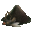
Порошок мухи Фейнапоттер — блок: Пчелиное гнездо (только природный блок) — 20 % за блок; существо мода: Безголовая невеста (водится: Мир духов) — 7,2 % за убийство. Все источники (3)
Способности
- Управление нитями — Управлять тонкими белыми нитями: стрелять ими, сковывать цель или обматываться ими, получая сопротивление любому урону
- Очарование — Очаровать врага: он замедляется, а его удары по вам не наносят урона. Нельзя очаровать врага дважды
Отыгрыш — переваривание за действие и перерыв между засчитанными:
- Поторговать с жителем — 0,95 %, раз в 20 с
- Покормить животное — 0,32 %, раз в 10 с
- Приручить животное — 0,63 %, раз в 15 с
- Съесть золотое яблоко — 0,38 %, раз в 10 с
- Съесть торт — 0,32 %, раз в 10 с
- Подобрать золото — 0,32 %, раз в 5 с
- Использовать проигрыватель — 0,32 %, раз в 15 с
Seq 5 · Демонесса Страданий
Зелье 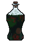 Демонесса Страданий Рецепт зелья (Последовательность 5). Эта Seq нужна для ступени VI.
Демонесса Страданий Рецепт зелья (Последовательность 5). Эта Seq нужна для ступени VI.
Ингредиенты
- Шёлковая железа чёрной вдовы — добыча: Пещерный паук (в заброшенной шахте) — 5 % за убийство игроком; существо мода: Безголовая невеста (водится: Мир духов) — 7,2 % за убийство.
- Очищенная вода — крафт: печь; сундук: Постройки Мира духов — 39 %. Все источники (3)
- Сок чёрного дурмана — пустая бутылка: Визерская роза — 60 % за попытку, бутылка остывает 1 с; сундук: Постройки Мира духов — 41 %. Все источники (3)
- Целые остатки волос суккуба — крафт: верстак; существо мода: Безголовая невеста (водится: Мир духов) — 7,2 % за убийство. Все источники (3)
- Порошок мухи Фейнапоттер — блок: Пчелиное гнездо (только природный блок) — 20 % за блок; существо мода: Безголовая невеста (водится: Мир духов) — 7,2 % за убийство. Все источники (3)
Способности
- Болезнь — Выпустить смертельную болезнь, разносящуюся по воздуху и заражающую всё рядом
Отыгрыш — переваривание за действие и перерыв между засчитанными:
- Убить сильного моба — 0,53 %, раз в 5 с
- Бросить взрывное зелье — 0,53 %, раз в 5 с
- Применить «Болезнь» — 1,1 %, раз в 20 с
- Выпить зелье отравления — 0,32 %, раз в 10 с
- Получить урон от огня — 0,21 %, раз в 5 с
- Убить в воде — 0,32 %, раз в 5 с
Seq 4 · Демонесса Отчаяния
Зелье 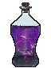 Демонесса Отчаяния Рецепт зелья (Последовательность 4). Эта Seq нужна для ступени VII.
Демонесса Отчаяния Рецепт зелья (Последовательность 4). Эта Seq нужна для ступени VII.
Ингредиенты
 Демонесса Отчаяния Характеристика Потустороннего (Последовательность 4) — характеристика Потустороннего
Демонесса Отчаяния Характеристика Потустороннего (Последовательность 4) — характеристика Потустороннего- Очищенная вода — крафт: печь; сундук: Постройки Мира духов — 39 %. Все источники (3)
- Сок нарцисса — пустая бутылка: Оранжевый тюльпан — 50 % за попытку, бутылка остывает 1 с; существо мода: Безголовая невеста (водится: Мир духов) — 0,49 % за убийство. Все источники (3)
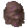
Прах мумии — археология: Пустынный храм — подозрительный песок, Колодец в пустыне — подозрительный песок — 20 %; сундук: Постройки Мира духов — 15–18 %. Все источники (4)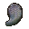
Чешуя теневой ящерицы — существо мода: Безголовая невеста (водится: Мир духов) — 0,49 % за убийство.
Способности
- Мифическая форма
- Чума — Смертоноснее, чем «Болезнь»
- Странствие по Зеркальному миру — Войти в Зеркальный мир через любое стекло
Отыгрыш — переваривание за действие и перерыв между засчитанными:
- Убить при низком здоровье — 0,42 %, раз в 2 с
- Поставить динамит — 0,42 %, раз в 10 с
- Применить «Проклятие» — 0,84 %, раз в 20 с
- Выжить на грани смерти — 0,21 %, раз в 5 с
- Стоять в полной темноте — 0,13 %, раз в 20 с
- Убить во тьме — 0,25 %, раз в 5 с
Seq 3 · Демонесса Нестарения
Зелье 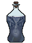 Демонесса Нестарения Рецепт зелья (Последовательность 3). Эта Seq нужна для ступени VIII.
Демонесса Нестарения Рецепт зелья (Последовательность 3). Эта Seq нужна для ступени VIII.
Ингредиенты
 Демонесса Нестарения Характеристика Потустороннего (Последовательность 3) — характеристика Потустороннего
Демонесса Нестарения Характеристика Потустороннего (Последовательность 3) — характеристика Потустороннего- Сок нарцисса — пустая бутылка: Оранжевый тюльпан — 50 % за попытку, бутылка остывает 1 с; существо мода: Безголовая невеста (водится: Мир духов) — 0,49 % за убийство. Все источники (3)
- Прах мумии — археология: Пустынный храм — подозрительный песок, Колодец в пустыне — подозрительный песок — 20 %; сундук: Постройки Мира духов — 15–18 %. Все источники (4)
- Чешуя теневой ящерицы — существо мода: Безголовая невеста (водится: Мир духов) — 0,49 % за убийство.
 Часы — обычный предмет
Часы — обычный предмет
Способности
- Окаменение — Обратить врагов и окружение в камень, надолго оглушив их
- Зеркальное возрождение (пассивная) — Если рядом есть стекло, вы воскреснете после смерти
Отыгрыш — переваривание за действие и перерыв между засчитанными:
- Использовать наковальню — 0,32 %, раз в 10 с
- Убить сильного моба — 0,32 %, раз в 5 с
- Применить «Окаменение» — 0,63 %, раз в 20 с
- Сохранять полное здоровье — 0,063 %, раз в 20 с
- Разбить лёд — 0,16 %, раз в 10 с
- Взглянуть на часы — 0,13 %, раз в 10 с
Seq 2 · Демонесса Катастроф
Зелье 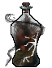 Демонесса Катастроф Рецепт зелья (Последовательность 2).
Демонесса Катастроф Рецепт зелья (Последовательность 2).
Ингредиенты
- Демонесса Катастроф Характеристика Потустороннего (Последовательность 2) — характеристика Потустороннего
- Сок нарцисса — пустая бутылка: Оранжевый тюльпан — 50 % за попытку, бутылка остывает 1 с; существо мода: Безголовая невеста (водится: Мир духов) — 0,49 % за убийство. Все источники (3)
- Прах мумии — археология: Пустынный храм — подозрительный песок, Колодец в пустыне — подозрительный песок — 20 %; сундук: Постройки Мира духов — 15–18 %. Все источники (4)
- Чешуя теневой ящерицы — существо мода: Безголовая невеста (водится: Мир духов) — 0,49 % за убийство.
- Тонированное стекло — обычный предмет
Способности
- Власть ангела — Ангельская сила: странствуйте по Миру духов и сокрушайте артефакты
- Явление бедствий — Обрушить на врагов стихийные бедствия: смерчи, метели, засуху и падение метеоров с неба
- Обрушение строений — Обрушить любое здание, пещеру, гору, океан или иное строение, погребая всё
Отыгрыш — переваривание за действие и перерыв между засчитанными:
- Поджечь — 0,21 %, раз в 5 с
- Поставить динамит — 0,21 %, раз в 10 с
- Применить «Явление бедствий» — 0,63 %, раз в 20 с
- Разрушить спавнер — 0,21 %, раз в 30 с
- Создать динамит — 0,13 %, раз в 20 с
Seq 1 · Демонесса Апокалипсиса
Зелье 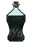 Демонесса Апокалипсиса Рецепт зелья (Последовательность 1).
Демонесса Апокалипсиса Рецепт зелья (Последовательность 1).
Ингредиенты
 Демонесса Апокалипсиса Характеристика Потустороннего (Последовательность 1) — характеристика Потустороннего
Демонесса Апокалипсиса Характеристика Потустороннего (Последовательность 1) — характеристика Потустороннего- Сок нарцисса — пустая бутылка: Оранжевый тюльпан — 50 % за попытку, бутылка остывает 1 с; существо мода: Безголовая невеста (водится: Мир духов) — 0,49 % за убийство. Все источники (3)
- Прах мумии — археология: Пустынный храм — подозрительный песок, Колодец в пустыне — подозрительный песок — 20 %; сундук: Постройки Мира духов — 15–18 %. Все источники (4)
- Чешуя теневой ящерицы — существо мода: Безголовая невеста (водится: Мир духов) — 0,49 % за убийство.
- Череп визер-скелета — обычный предмет
Способности
- Апокалипсис — Принести в область Конец, обрекая всё вокруг и обращая блоки в обсидиан
Отыгрыш — переваривание за действие и перерыв между засчитанными:
- Убить сильного моба — 0,16 %, раз в 5 с
- Поджечь — 0,11 %, раз в 5 с
- Применить «Апокалипсис» — 0,32 %, раз в 20 с
- Убить босса — 0,21 %, раз в 1 мин
- Войти в Незер — 0,084 %, раз в 30 с